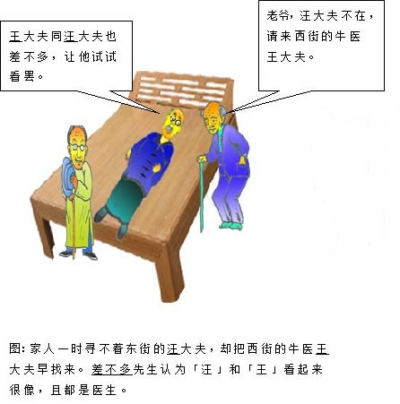

差不多先生传 胡适
你知道中国最有名的人是谁？提起此人，人人皆晓，处处闻名，他姓差，名不多，是各省各县各村人氏。你一定见过他，一定听过别人谈起他，差不多先生的名字，天天挂在大家的口头，因为他是中国全国人的代表。
差不多先生的相貌，和你和我都差不多。他有一双眼睛，但看的不很清楚；有两只耳朵，但听的不很分明；有鼻子和嘴，但他对于气味和口味都不很讲究；他的脑子也不小，但他的记性却不很精明，他的思想也不细密。
他常常说：「凡事只要差不多，就好了。何必太精明呢？」
他小时候，他妈叫他去买红糖，他买了白糖回来，他妈骂他，他摇摇头道：「红糖，白糖，不是差不多吗？」
他在学堂的时候，先生问他：「直隶省的西边是哪一省？」他说是陕西。先生说：「错了，是山西，不是陕西。」他说：「陕西同山西，不是差不多吗？」
后来他在一个钱铺里做伙计；他也会写，也会算，只是总不会精细；十字常常写成千字，千字常常写成十字。掌柜的生气了，常常骂他，他只笑嘻嘻地赔小心道：「千字比十字多一小撇，不是差不多吗？」
有一天，他为了一件要紧的事，要搭火车到上海去，他从从容容地走到火车站，迟了两分钟，火车已开走了。他白瞪着眼，望着远远的火车上的煤烟，摇摇头道：「只好明天再走了，今天走同明天走，也还差不多；可是火车公司未免太认真了。八点三十分开，同八点三十二分开，不是差不多吗？」他一面说，一面慢慢地走回家，心里总不很明白为甚么火车不肯等他两分钟。

有一天，他忽然得一急病，赶快叫家人去请东街的汪先生。那家人急急忙忙跑去，一时寻不着东街的汪大夫，却把西街的牛医王大夫请来了。差不多先生病在上，知道寻错了人；但病急了，身上痛苦，心里焦急，等不得了，心里想道：「好在王大夫同汪大夫也差不多，让他试试看罢。」于是这位牛医王大夫走近前，用医牛的法子给差不多先生治病。不上一点钟，差不多先生就一命呜呼了。
差不多先生差不多要死的时候，一口气断断续续地说道：「活人同死人也差……差……差……不多，……凡事只要……差……差……不多……就……好了，何……必……太……太认真呢？」他说完了这句格言，就绝了气。
他死后，大家都很称赞差不多先生样样事情看得破，想得通；大家都说他一生不肯认真，不肯算账，不肯计较，真是一位有德行的人。于是大家给他取个死后的法号，叫他做圆通大师。
他的名誉愈传愈远，愈久愈大，无数无数的人，都学他的榜样，于是人人都成了一个差不多先生。──然而中国从此就成了一个懒人国了。